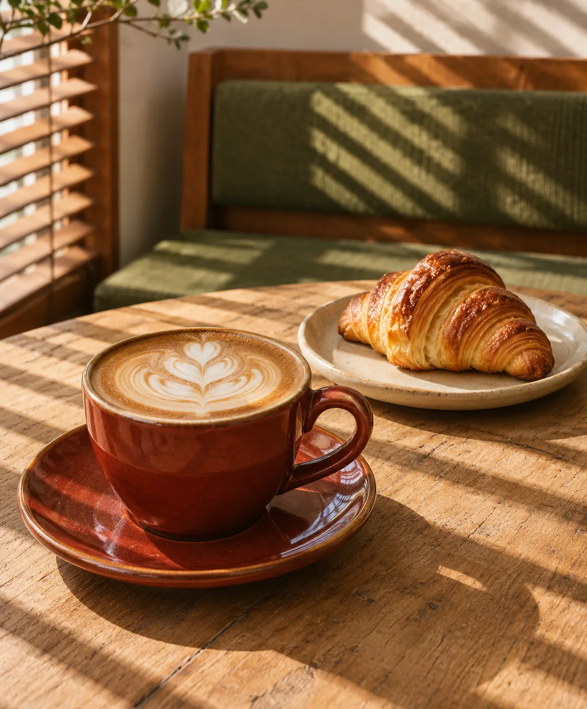
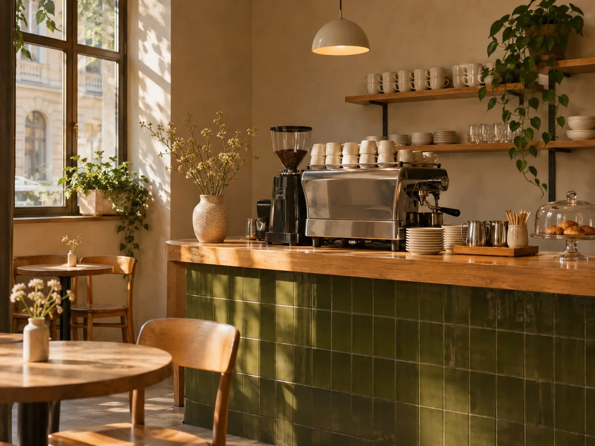

Кофейня в Симферополе
Хороший кофе
всегда рядом.
Кофе из свежего зерна, круассаны из печи и завтраки до полудня. Заходите по дороге или оставайтесь подольше.
Посмотреть меню
Ежедневно с 08:00


Сырники со
смородиной
Наш фирменный завтрак — тёплые сырники с хрустящей корочкой. Подаём их с густой сметаной и вареньем из чёрной смородины: она даёт ту самую кислинку, за которой хочется зачерпнуть ещё ложку.
Посмотреть завтракиЗаглядывайте
на кофе
Точка для примера маршрута
Симферополь,
Екатерининский сад
Пример часов работы
Пн–пт · 08:00–21:00
Сб–вс · 08:00–22:00
«Рядом» — вымышленная кофейня. Маршрут ведёт к городскому саду, цены приведены для примера.